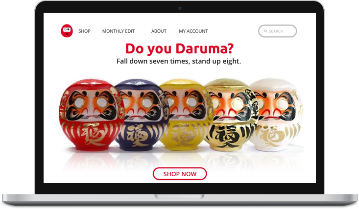

My Daruma
Research | Brand | Design
Goal: Design a web site to promote a new product.
Use case: Companies are constantly launching new products. Strong marketing helps these launches attain revenue growth, new customers and recognition for their achievement. You will be in charge of deciding on the type of product being sold (coffee or drink product, an app, book, etc.), the name of the product, and the content to try and share the benefits and value of that product.